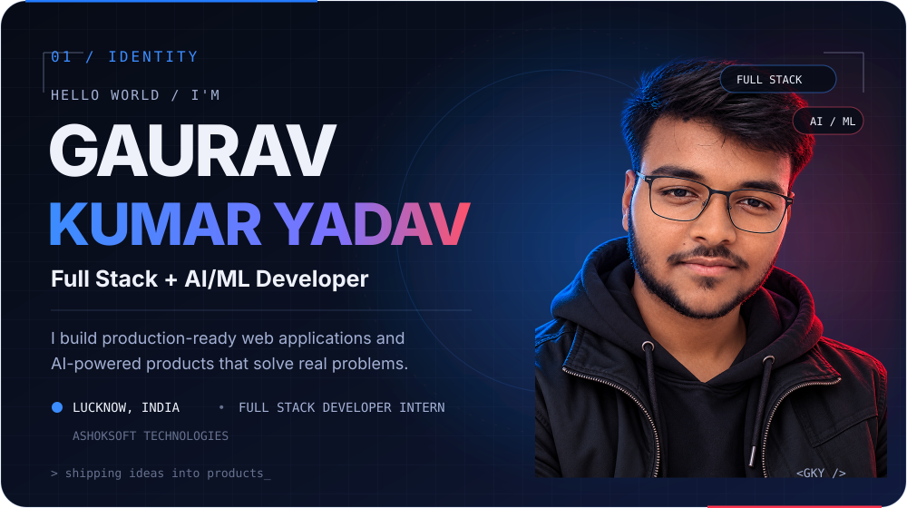
Portfolio ↗ · LinkedIn ↗ · Email ↗ · GitHub ↗
I build production-ready web applications and AI-powered products — from interfaces and APIs to data, real-time systems and RAG.
What I build
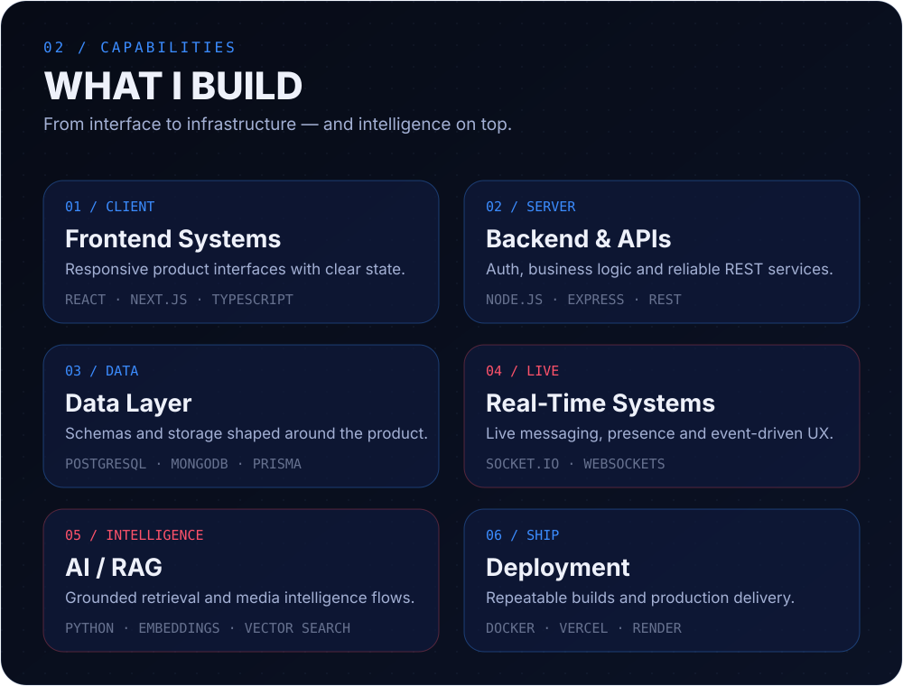
Selected work
Products chosen for engineering depth, technical range and recruiter value.
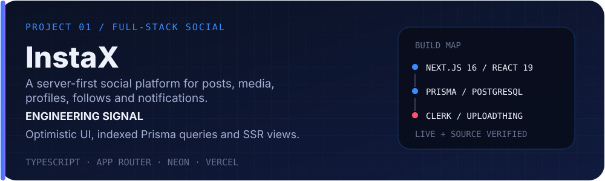
InstaX — Server-first social product. Live app ↗ · Source code ↗
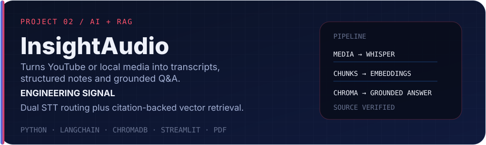
InsightAudio — AI meeting intelligence and grounded RAG. Source code ↗
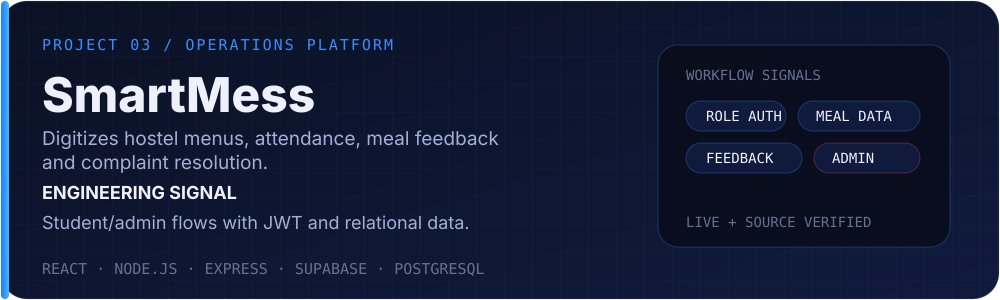
SmartMess — Hostel dining operations. Live app ↗ · Source code ↗
TrueCert — Secure certificate issuance and verification. Source code ↗
Journey
Stack
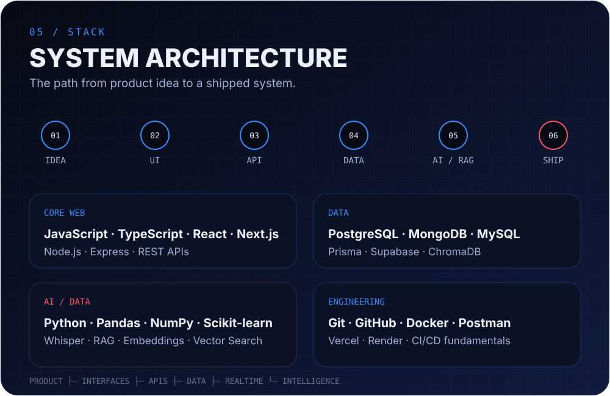
Current signal
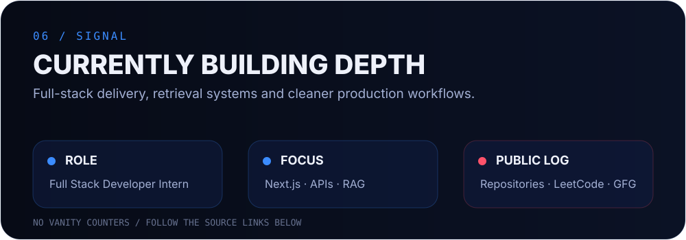
GitHub momentum
07 / ACTIVITY
Consistency behind the projects.
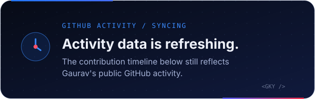
@ggauravky · ACTIVITY / CONSISTENCY / OPEN SOURCE
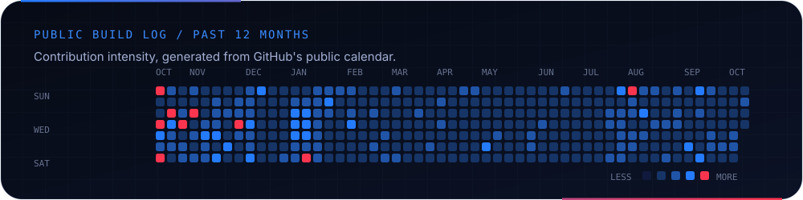
Repositories ↗ · LeetCode ↗ · GeeksforGeeks ↗
Developer ID
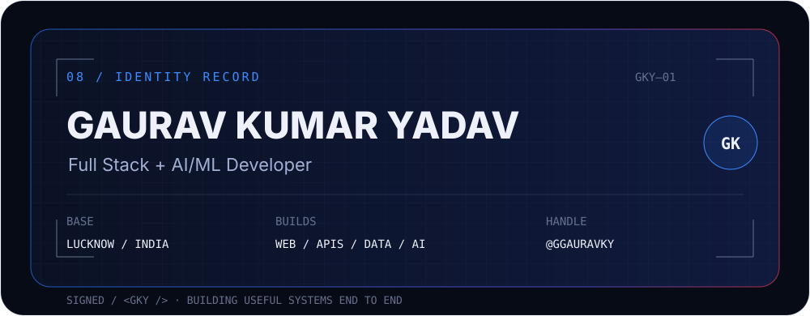
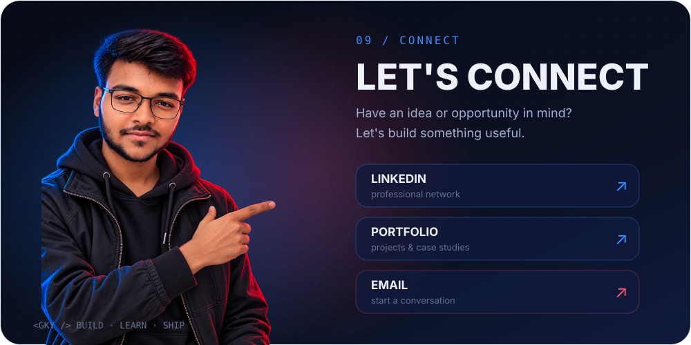